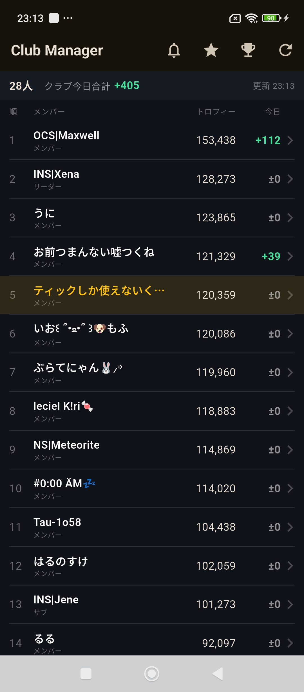
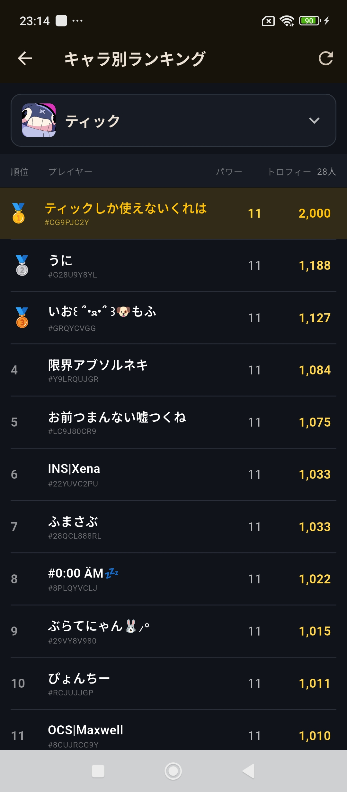
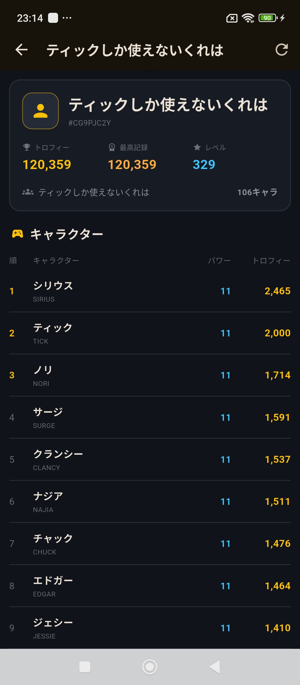

01
クラブメンバー一覧
クラブ内のメンバーを一覧表示し、 各プレイヤーのトロフィー数を確認できます。
GAME / PERSONAL DEVELOPMENT
クラブの情報を、
もっと見やすく。
Brawl Starsのクラブメンバー情報や、 トロフィーの変化、キャラクター別ランキングなどを 確認するために制作した個人開発アプリです。



OVERVIEW
クラブメンバーの状態を、 一覧で把握しやすくするための管理・分析アプリです。
メンバーごとのトロフィー数や、 その日の増加量を一覧で確認できます。
さらにキャラクター別ランキングや プレイヤーごとの詳細情報を見ることで、 クラブ内の状況をより細かく確認できます。
WHY
クラブメンバーの動きを、 もっと分かりやすく確認したいと思ったことが きっかけです。
普段からBrawl Starsを遊んでいるからこそ、 「誰が今日どれくらい伸びたのか」 「特定キャラクターで誰が強いのか」など、 実際に見たい情報が具体的にありました。
それらを自分が見やすい形にまとめ、 普段のプレイやクラブ管理に使えるようにしています。
FEATURES
01
クラブ内のメンバーを一覧表示し、 各プレイヤーのトロフィー数を確認できます。
02
その日のトロフィー増加量を表示し、 メンバーの動きを確認できます。
03
キャラクターを選択し、 クラブ内のプレイヤーをトロフィー順に確認できます。
04
プレイヤーの現在トロフィー、 最高記録、レベルなどを確認できます。
05
プレイヤーごとのキャラクターについて、 パワーやトロフィー数を確認できます。
06
最新の情報を再取得し、 クラブの状態を更新できます。
DESIGN & THINKING
QUICK CHECK
メンバー数やトロフィー数、 今日の増減をできるだけ一覧で確認できるようにしています。
RANKING
ランキング形式にすることで、 クラブ内の順位やキャラクターごとの強さを 比較しやすくしています。
GAME UI
ダークベースに黄色やブルーを使い、 管理ツールになりすぎない、 ゲーム系アプリらしい見た目を意識しています。
TECHNOLOGY
使用技術は、実際の実装内容に合わせて掲載します。
使用しているフレームワークやAPI、 データ保存方法などは、 実装内容を確認したうえで 正確な内容だけを掲載します。
SOURCE CODE
Brawl Watchのソースコードはこちらから確認できます。